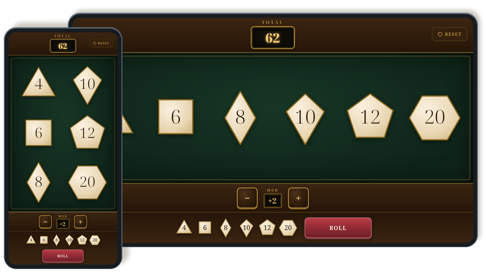

Dice roller
A simple dice rolling web app built with AI-assisted coding
Roles
- Interaction Design
- Coding
- AI Prototyping
Some tabletop games involve rolling and adding up a lot of dice. I wanted a dice rolling app that replicates the look and feel of physical dice rolls, but automates the totalling. I didn’t find one with the simplicity and flexibility I was looking for, so I created my own with the aid of AI prototyping.
I wrote up design and functional specifications to feed into an LLM, which created an initial prototype. This was followed by rounds of additional prompts and manual code edits to refine the prototype. Once the functionality was complete, I refactored the code to make it more understandable and maintainable, and made final design adjustments by hand.
This method allowed me to iterate quickly on different ways to improve the design. In early iterations the dice would all randomise instantly, without any rolling animation. Making the dice scramble through multiple numbers made the dice rolls feel more random and physical.
Results
- Try it out: Dice roller
- Source code on GitHub
